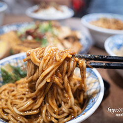
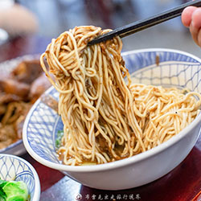
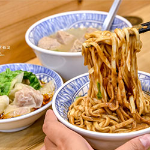

部落格 / 媒體介紹

食尚玩家開箱：雙醬雙享受
「雙醬麵」就是炸醬＋麻醬，麵條可以選細麵或粗麵，醬汁給得很足、濃稠度也剛好，麵體皆能均勻拌到醬汁，麵體濕潤可口，吃得到 ...

布雷克 ~ 麻醬香氣一拌驚艷
「主要是醬料都在底部，所以一定要拌開，一拌開麻醬的香氣就出來了，麻醬的香氣真的很足夠，是那種很濃厚的味道 ...
Alina ~ 好吃豬腳滷味配拌麵
滷得入味又不過鹹，是很古早的家常味，尤其是豬腳滷的膠質滿軟Q，稍微含一下就可以將骨頭分離，豬頭皮跟嘴邊肉也很不錯 ...

Tenjo 街坊小吃推薦
牛油香氣完美發揮了加分效果，讓麻醬變得更富層次，口味雖重但不會死鹹，麵條煮得軟硬度也是恰到好處 ...
陳小可推薦：台北超強滷味麵店
東引快刀手的滷味絕對是必點，滷牛腱肉彈嫩不柴，帶筋部位讓整體口感更棒！豬頭皮斜切有厚度，Ｑ嫩彈牙有嚼感，入味不死鹹，搭配 ...
嫩Q豬腳！一口下去直接入口即化
豬腳滷的嫩Q嫩Ｑ就知道一口咬下去多Ｑ彈！那膠質要說多綿密就多綿密！有多軟Ｑ就多軟Ｑ！一口下去便入口即化！...